(back to all presentations)Table of contents |
Author: Johannes Buchner Homepage: http://astrost.at/istics/ Further information: Separating the nuclear and galaxy-scale obscuration in AGNAbstract: AGN surveys in the X-ray regime have revealed that the majority of AGN (3/4) are obscured, with 1/3 showing Compton-thick columns. This indicates that hidden accretion is an important phase in the growth of super-massive black holes. However, it remains unclear how much of this obscuration is provided by the host galaxy; a question which cannot be answered using a central point source. Our novel approach employs 600 long gamma-ray bursts to "x-ray" the column densities of their host galaxies. From these column densities, we reconstruct the gas distribution of statistically average galaxies at z=0.5-3 as a function of stellar mass. We find a host stellar-mass dependence but little redshift evolution. We apply this result to the AGN population, with some caveats (star-formation rate, metallicity). Based on the AGN stellar-mass distribution, we find that host galaxy gas fails to provide Compton-thick column densities, but still represents an important, luminosity-independent obscurer with columns of N_H~1e22/cm². Our approach separates the galaxy-scale and nuclear ("torus") obscurers for the first time and their covering factors. It sheds light on the luminosity-dependence of the torus and recasts the discussion of the evolution of AGN obscuration. We corroborate our findings through ray-tracing in hydrodynamical simulations of galaxies, and analytic limits valid also to mergers. 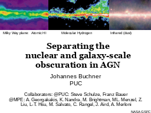 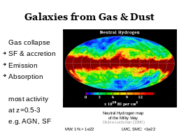 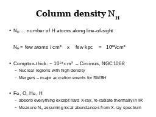 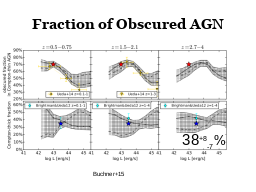
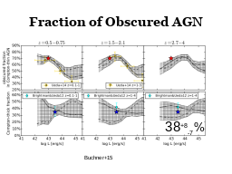

 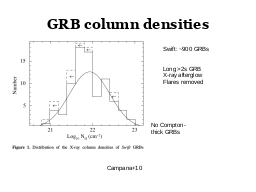
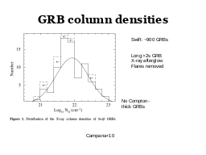

 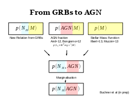
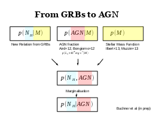
 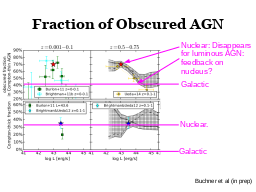
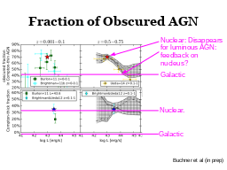

 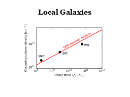
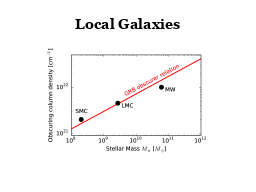
|